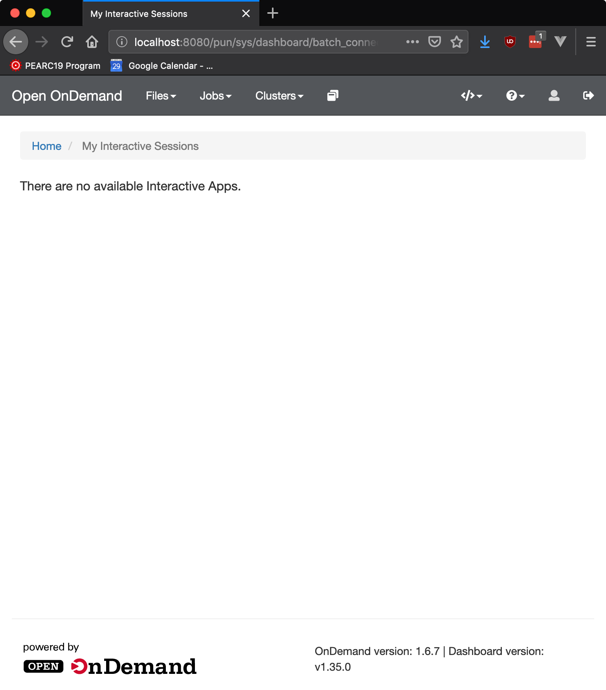

Apps may be shared via a variety of methods including:
System installed by admin for everyone to launch (access controlled via file
permissions)
Source Code Sharing (share code, launch your own copy of an app). This is
like how the Job Composer works, or how many groups collaborate when using
HPC: they share their job scripts and code, and use their own copies to
submit jobs.
Executable Sharing (peer to peer) is where a user deploys an app in their
home directory that other users can launch. This is similar to adding to your
PATH the bin directory of another user.
Admins may install apps to the system by copying the application directory to /var/www/ood/apps/sys. Default directory permissions (755) will allow all users with access to OnDemand to see and run that app. Apps may have their access restricted by changing the permissions on individual application directories. For example if a site does not wish to show licensed software to un-licensed users they might do the following:
# Given:# - an app named $NEW_APP# - a group named $NEW_APP_GROUP# - and a user named $NEW_APP_USER
sudocp-r"/path/to/$NEW_APP"/var/www/ood/apps/sys
sudochmod750"/var/www/ood/apps/sys/$NEW_APP"
sudochgrp"$NEW_APP_GROUP""/var/www/ood/apps/sys/$NEW_APP"
sudousermod-a-G"$NEW_APP_GROUP""$NEW_APP_USER"
You can utilize file access lists (FACLs) to increase the granularity with whom you share the apps. For example, you could specify multiple groups and individual users to share with, or even exclude specific users or groups.
This app authorization mechanism (using file permissions) can also be useful for canary deployments (sharing an app under development with a subset of users, or just your development team).
Note that user ood is not a member of the desktopers supplemental group.

These changes take effect immediately, although when a user is added or removed from a group their PUN will need to be restarted for the change to take effect.
Code sharing is when an application’s source code is shared between two or more users who run it as a personal development application. Models for this sharing can include using a web-based file repository such as Github, emailing Zip’d app directories, or a group readable directory symlinked to each user’s ~/ondemand/dev/ directory.
For an example of the later consider:
# As user mrodgers
owens-login01:mrodgersmrodgers$pwd# /fs/project/PZS0714/mrodgers
owens-login01:mrodgersmrodgers$ls-l
# total 97856# drwxr-xr-x 7 mrodgers PZS0714 4096 Aug 1 16:03 blender-batch-render-app
owens-login01:mrodgersmrodgers$cd~/ondemand/dev
owens-login01:mrodgersmrodgers$ln-s/fs/project/PZS0714/mrodgers/blender-batch-render-app
# As user johrstrom
owens-login01:johrstromjohrstrom$cd~/ondemand/dev
owens-login01:johrstromjohrstrom$ln-s/fs/project/PZS0714/mrodgers/blender-batch-render-app
User johrstrom will now see blender-batch-render-app in their Sandbox Apps, but because they do not own the files they will not be able to edit the files, or update dependencies, etc resulting in a slightly broken experience. Better still would be peer to peer app sharing.
By setting a few environment variables it is possible to enable a more polished peer to peer app sharing experience. There are two reasons why this mode is not always enabled: the first is that app permissions are the only thing that prevents all a site’s OnDemand users from seeing a shared app, so it is important to get the permissions correct, and only to deploy apps that are production ready. The other reason to be careful with app sharing is that requires greater trust placed in app developers.
Warning
Executable sharing means the app and all its code runs as the user
executing it, like everything else in OnDemand. User’s might not
realize this. We currently do not provide an opt in screen warning
users that this app “will have permission to do everything on their
behalf and act as them”. As a result, you should fully trust whoever
you enable to do share apps using executable sharing.
Enabling App Sharing in the dashboard serves two primary purposes:
For shared app users, provide an interface to launch those apps
For app developers, provide an interface to help manage shared apps
Currently this significantly changes the interface of the Dashboard. The MOTD
moves to the right of the screen and shared apps appear below the welcome logo
and text.
Shared apps are deployed to
/var/www/ood/apps/usr/$USER/gateway/$APPNAME. We recommend gateway
be a symlink to the user’s home directory at $HOME/ondemand/share and
by default set 750 permissions on /var/www/ood/apps/usr/$USER. This
approach has these benefits (assuming users named efranz and an0047:
The admin as root controls who can share apps by creating root owned
directories like /var/www/ood/apps/usr/efranz and
/var/www/ood/apps/usr/an0047.
The admin controls who can access that user’s shared apps by setting
permissions on this directory. Thus by setting 750 on
/var/www/ood/apps/usr/an0047 this ensures that an0047 can only share
apps with users in his primary group. At times we have created a supplemental group (shinyusr) and chgrp the share directory to this group so
that the developer can share apps with every user in this group.
The developer who can share apps can modify permissions on the app
directories themselves i.e.
/var/www/ood/apps/usr/an0047/gateway/customapp
so that only a subset of the users he could share with have access. This can
be done through FACLs or using the same chgrp + 755 approach
In summary, to enable a new user to create shared apps, run these commands:
# given a user efranz
sudomkdir-p/var/www/ood/apps/usr/efranz
cd/var/www/ood/apps/usr/efranz
chmod750.
ln-s~efranz/ondemand/sharegateway
This is with two users Eric (efranz) and Bob (an0047).
Eric has a dev app “MATLAB”, and interactive plugin app. Eric can
Launch MATLAB
View and Edit the code
Bob (an0047) cannot see this app because it is isolated in Eric’s “Sandbox”
i.e. ~efranz/ondemand/dev/matlab:
If Eric shares the git repo path or URL with Bob, Bob can clone this into his
home directory if he is enabled as a developer. This is called “Source Code Sharing”.
Eric can share this app with Bob by selecting “My Shared Apps” and cloning the MATLAB
repo to deploy ~efranz/ondemand/share/matlab
Now when Bob accesses the OnDemand home page he sees Eric’s MATLAB app and can
launch it: